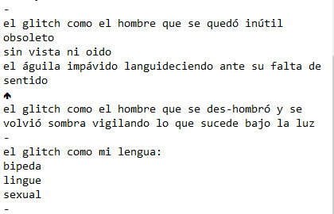
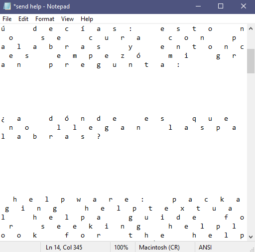
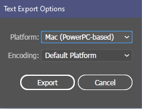

HW_ Week 7
Matthis G:
Didn’t have a huge amount of time this week, but I ended up doing a repro of the Vasulka effect using a webcam. Vertices of each horizontal line are modulated by the value of the underlying pixel. I added a low frequency oscillation to the entire thing to try and simulate some of the distortion that makes analog video exciting. => code

Lillian B:
I missed last week’s class and catching up was difficult, so I had to avail myself of Edgardo’s p5.js examples. I am grateful for them even though it feels like “cheating.” Like many this past week, I was horrified by the devastation caused by the tornados in Kentucky and elsewhere. I’ve long been fascinated by/terrified of tornados and chose to work with an image I found on Twitter. I was struck by how this type of tornado (a “wedge” tornado) can be hard to identify as a tornado (especially at night), because it can be perceived as being as wide or wider than the distance between the ground the cloud base. Tornados are most dangerous at night, and even more so if it’s hard to distinguish between a tornado and a severe storm. So I chose this style of glitch to further distort the already-difficult-to-see tornado, whose shape can change rapidly and be difficult to see/look at/understand as a tornado qua tornado. In messing with the code and adding more images, I created another “glitch” by adding an image in the background that flickers (though I don’t know why) but I like it because it connotes the storm, the movement, and the ferocity of the event. The flickering doesn’t render in the still, so here’s the live code.
Hiroyuki S:
Jenna Murphy:
Rosa Menkman Inspired

Code: https://editor.p5js.org/jennamurphymcad/full/Z98yA-rlW
Mauricio Román
Kate Y:
I struggled to recreate the Rutt/Etra scan line technique, tried and failed at a few other things and finally fell back to pretty much the same approach as last homework, merging images of myself as a child to glitch the sense of identity and time: https://editor.p5js.org/kateyourke/sketches/DSzf5SRjk (mini-step by mini-step…)

Yadira S:
milpa glitch ** code - https://editor.p5js.org/yadlra/sketches/6Os8MisLJ

Sara M:
Inspired by Rosa Menkman, I played around with encoding and text. I started with a non-corrupted text around glitch on NotePad, this is the original file (which can be downloaded and corrupted if you want). Some interesting things started to happen when I saved it with different encoding:


And finally, something very interesting happened:


This happened when opened the original .txt file on Illustrator and tried exporting with different properties:
